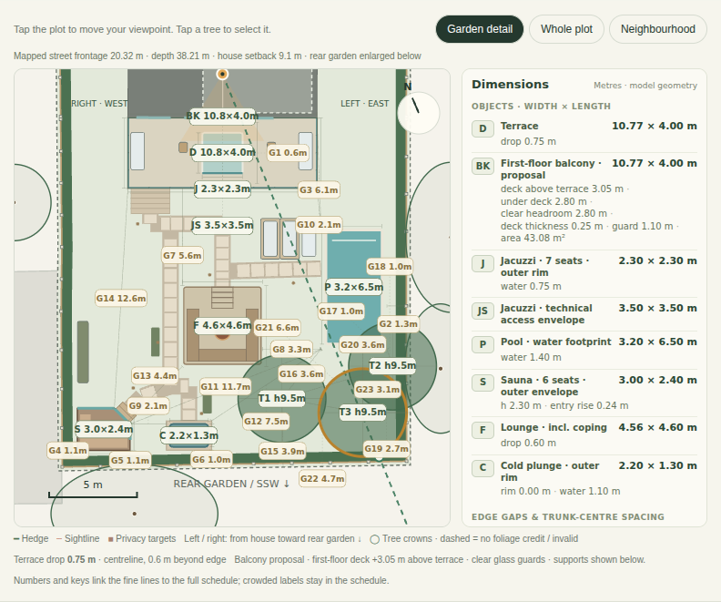
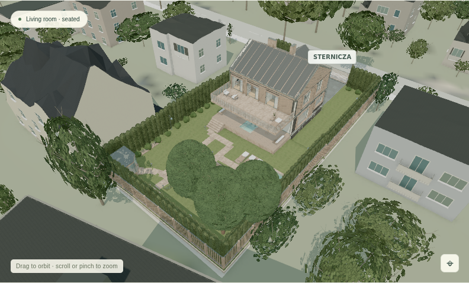
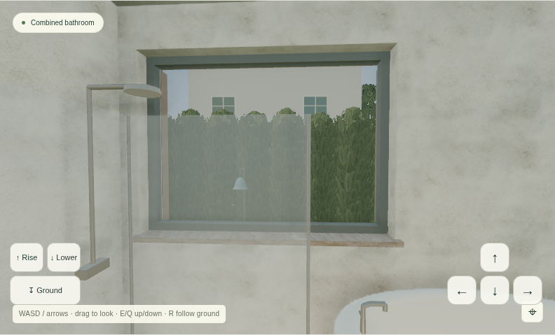
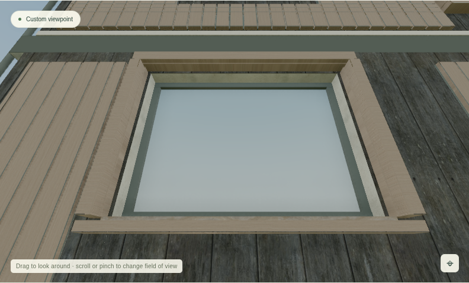
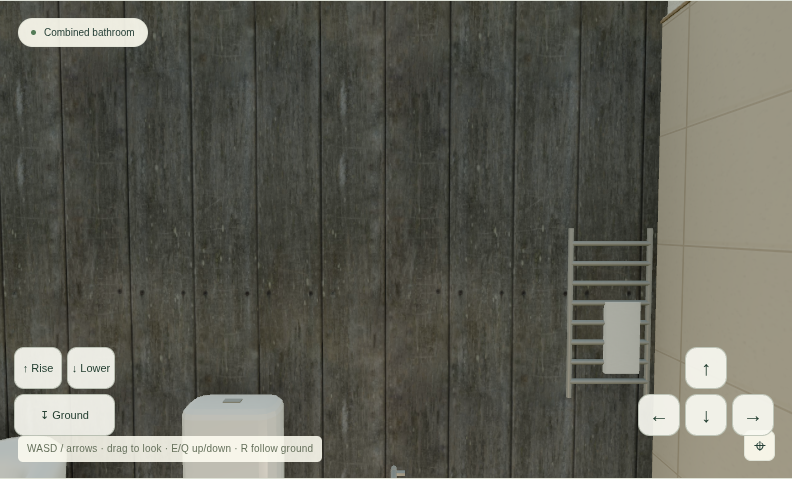

The revised design


One row beside the pool
Three 78 × 200 cm sunbeds share the same head and foot lines, with 32 cm between them. The former right-side dining area is removed. Left and right refer to the view from the house into the garden.
Open original PNG

An open right-hand garden
The freestanding dining table, chairs, paved pad and its branch path are gone. The central fire lounge, terrace, pool and retained pines remain in place. This overview looks back toward the house.
Open original PNG

A view out through the side window
The remaining ground-floor bathroom window keeps its opening and gains reflective privacy glazing: a tinted view from inside and a reflective appearance from outside. The image shows the interior view.
Open original PNG

A mirror appearance from outside
Viewed from outside, the remaining bathroom window has a mirror-like surface that hides the bathroom fixtures in this view. Its paired interior view retains the view out through the same opening. The lighting caveat below still applies to real glazing.
Open original PNG

A solid wall toward the street
The street-facing bathroom window is removed from the wall model, including its pane, frame and trim. A continuous finished wall now occupies the former opening.
Open original PNGEvidence and provenance
These five images are original browser-check PNGs from the exact source head below. Their bytes are copied unchanged. The garden plan’s historical source filename mentions “two-edge”; its captured content is the new side-by-side row. Raw reports and SHA-256 hashes are provided for inspection.
- Source commit
5d78cc4bb017960169e62173b0dace85c4ba7bf4- Workflow
- Garden Lab CI · run 92
- Validation
- Full CI completion pending
- Image treatment
- Original pixels and files, with no cropping, retouching or re-encoding.
Inspect the CI job results
- Final CI evidence is not available yet.